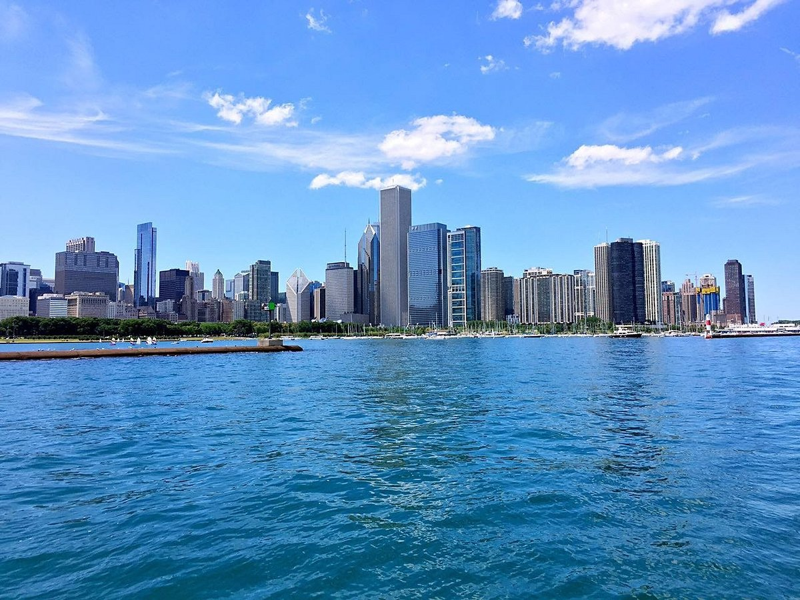
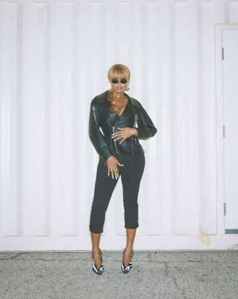

Where I'm From

I'm from the beautiful city of Chicago, Illinois. I was born and raised here, and I love everything about this city - the culture, the food, and the people. Chicago has a rich history and is known for its vibrant music scene, delicious cuisine, and Midwestern hospitality. I'm proud to call this city my home.
Music

One of my biggest passions is music. I love listening to all kinds of music, from jazz and blues to hip-hop to R& B . My favorite artist is Jazmine Sullivan, she is beyond talented.
My Kiddos

I have two amazing Cats. My first cat is named Zeus, and my second cat is named Momo. Zeus is the larger folden one with curled ears and Momo is the smaller one with differnt colors.For trnasperncy they do stress me out but they are my Kiddos.